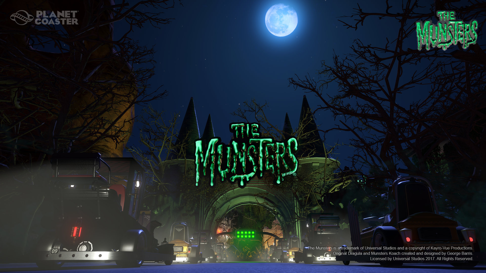

Updates/DLC:
The Munsters’® Munster Koach Construction Kit
Take a walk in the park with America’s first family of fright in The Munsters Construction Kit for Planet Coaster. The Munsters’ Munster Koach Construction Kit features in-game replicas of the Munster Koach and the DRAG-U-LA drag racer from The Munsters’ episode ‘Hot Rod Herman’ and The Munsters’ 1966 movie ‘Munster, Go Home!’ With The Munsters Construction Kit both cars will available in-game as go-kart racers, 1:1.2 scale scenery pieces and 1:1.8 scale ‘kitbash’ models which can be disassembled and re-assembled however you choose. The Munsters Construction kit also includes a branded logo sign and bonus animated FX pieces. Take a trip to 1313 Mockingbird Lane in Planet Coaster today! *Requires Planet Coaster game (sold separately)
